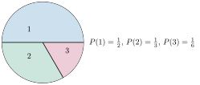
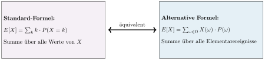

Aufgabe 6.3
Wem diese alternative Darstellung noch nicht ganz geheuer ist, der überlege sich die Bedeutung der Formel anhand des Beispiels mit dem Glücksrad.
- Der Grundraum $\Omega$ besteht aus allen 9 Paaren $(i,j)$ mit $i,j \in \{1,2,3\}$
- Berechnen Sie für jedes $\omega=(i,j)$ die Wahrscheinlichkeit $P(\omega)$
- Bestimmen Sie für jedes $\omega$ den Funktionswert $X(\omega) = i + j$
- Wenden Sie die Formel $E[X] = \sum_{\omega \in \Omega} X(\omega) \cdot P(\omega)$ an
- Vergleichen Sie mit der Standardformel aus Aufgabe 6.1

Die zwei äquivalenten Formeln für den Erwartungswert:

Gegenüberstellung der beiden Berechnungsweisen:
(aus Aufgabe 6.1)
Verteilung von $X$:
| $k$ | $P(X=k)$ |
| 2 | $\frac{1}{4}$ |
| 3 | $\frac{1}{3}$ |
| 4 | $\frac{5}{18}$ |
| 5 | $\frac{1}{9}$ |
| 6 | $\frac{1}{36}$ |
(über Elementarereignisse)
Alle 9 Elementarereignisse:
| $\omega$ | $P(\omega)$ | $X(\omega)$ |
| (1,1) | $\frac{1}{4}$ | 2 |
| (1,2) | $\frac{1}{6}$ | 3 |
| (1,3) | $\frac{1}{12}$ | 4 |
| (2,1) | $\frac{1}{6}$ | 3 |
| (2,2) | $\frac{1}{9}$ | 4 |
| (2,3) | $\frac{1}{18}$ | 5 |
| (3,1) | $\frac{1}{12}$ | 4 |
| (3,2) | $\frac{1}{18}$ | 5 |
| (3,3) | $\frac{1}{36}$ | 6 |
Detaillierte Berechnung mit der alternativen Formel:
\begin{align*} E[X] &= \sum_{\omega \in \Omega} X(\omega) \cdot P(\omega)\\ &= 2 \cdot \frac{1}{4} + 3 \cdot \frac{1}{6} + 4 \cdot \frac{1}{12} + 3 \cdot \frac{1}{6} + 4 \cdot \frac{1}{9}\\ &\quad + 5 \cdot \frac{1}{18} + 4 \cdot \frac{1}{12} + 5 \cdot \frac{1}{18} + 6 \cdot \frac{1}{36}\\ &= \frac{1}{2} + \frac{1}{2} + \frac{1}{3} + \frac{1}{2} + \frac{4}{9} + \frac{5}{18} + \frac{1}{3} + \frac{5}{18} + \frac{1}{6} \end{align*}
Bringen wir alles auf den Nenner 18: \begin{align*} E[X] &= \frac{9}{18} + \frac{9}{18} + \frac{6}{18} + \frac{9}{18} + \frac{8}{18} + \frac{5}{18} + \frac{6}{18} + \frac{5}{18} + \frac{3}{18}\\ &= \frac{60}{18} = \frac{10}{3} \approx 3.33 \end{align*}
Vergleich und Interpretation:
Beide Methoden liefern dasselbe Ergebnis: $E[X] = \frac{10}{3}$
Wann ist welche Formel vorteilhaft?
- Standard-Formel: Vorteilhaft, wenn die Verteilung von $X$ bereits bekannt ist oder leicht zu bestimmen ist
- Alternative Formel: Vorteilhaft bei:
- Komplexen Funktionen $X(\omega)$
- Wenn die Verteilung schwer zu bestimmen ist
- Theoretischen Beweisen
Theoretische Einordnung:
Die alternative Formel zeigt, dass der Erwartungswert ein gewichtetes Mittel über alle möglichen Ausgänge ist. Jeder Ausgang wird mit seiner Wahrscheinlichkeit gewichtet. Dies ist die grundlegende Definition des Erwartungswerts und bildet die Basis für allgemeinere Konzepte in der Wahrscheinlichkeitstheorie.
Im Video: Bonus · Alternative Darstellung bei 6:25